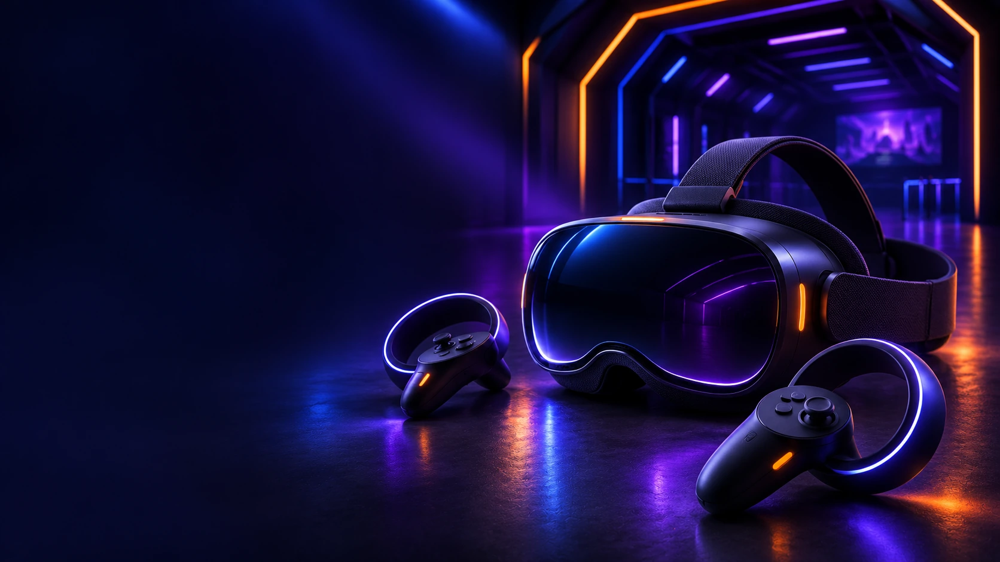
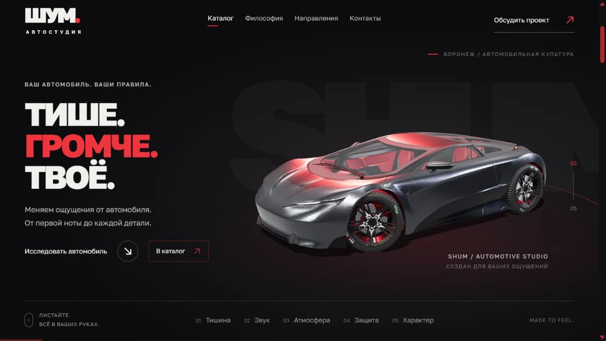
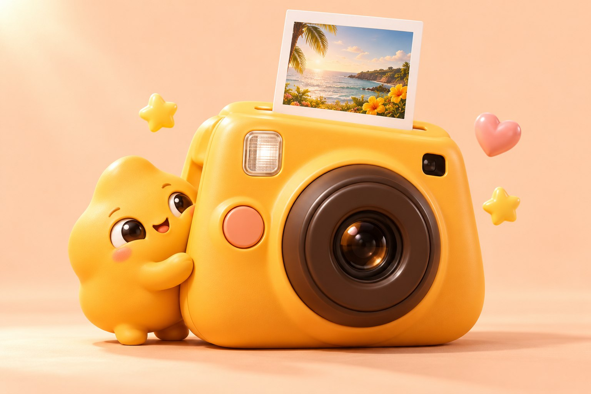
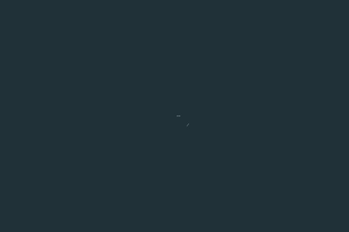
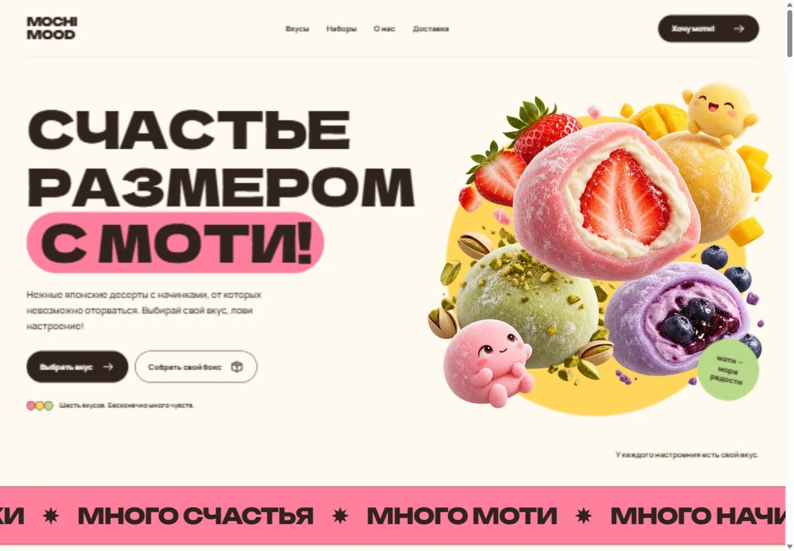
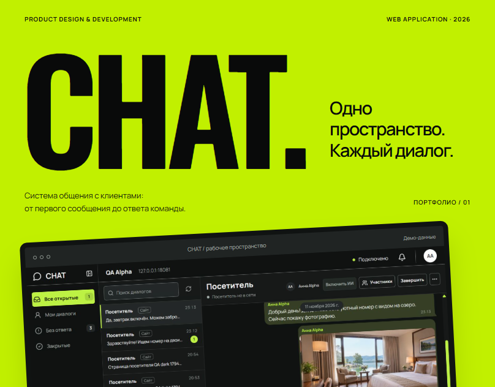
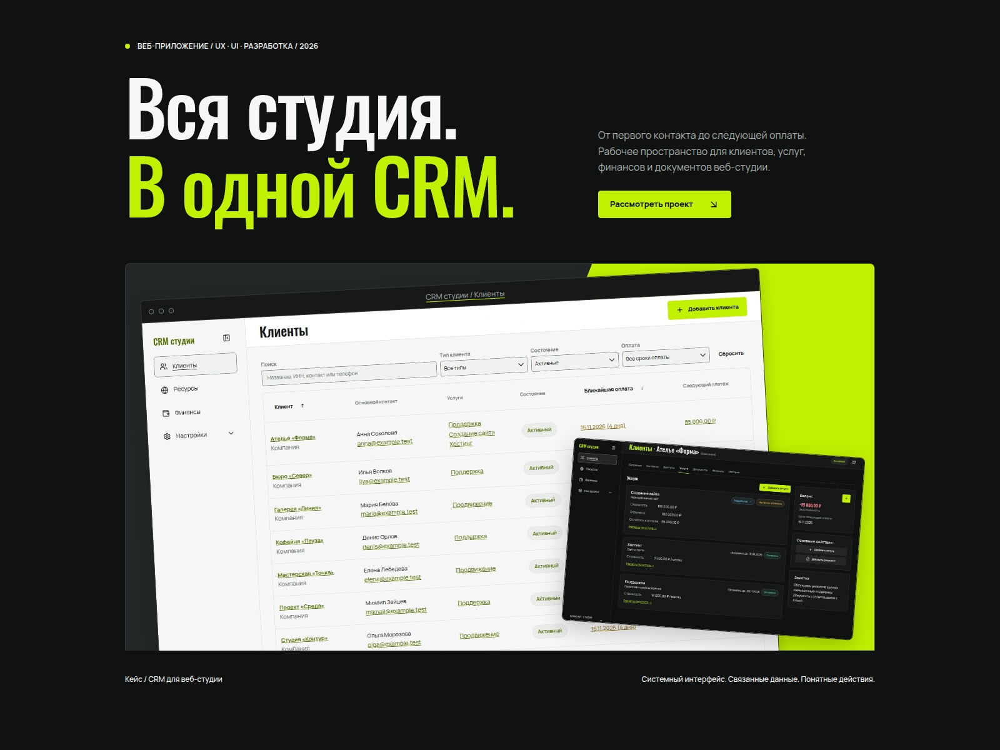
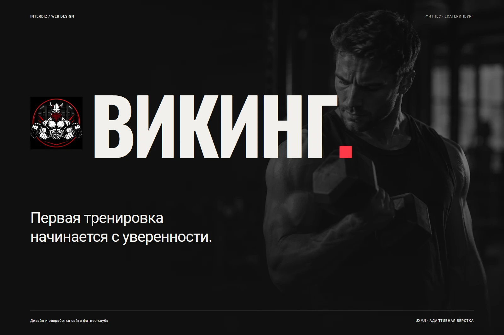

ВИАР
СайтыАйдентикаАвтоматизация
Сайт и айдентика VR-клуба в Твери.
Сайты, фирменные стили и рекламные кампании. Посмотрите, как мы решаем задачи в разных отраслях.

Сайт и айдентика VR-клуба в Твери.

Автомобиль, звук и характер в движении.

AMI! Магазин камерМаленькие камеры. Большие моменты.

Ветеринария с вниманием к каждому.

Цифровая забота, которую чувствуешь.

Новая digital-глава ресторана у воды.

Айдентика с ощущением чистоты.

Цифровая витрина цветочного бутика.

Сайт хостела в чёрно-оранжевых тонах.

С Востока на весь мир — фирменный стиль.

Контрастный дизайн цифровой витрины.

ТВ-реклама и афиши, в которых оживает история.

Логотип для современной стоматологии.

Сайт японских десертов с каталогом и конструктором набора.

Виджет для нескольких сайтов и единая очередь обращений для команды.

Клиенты, услуги, периодические платежи и документы веб-студии в одной CRM.

Понятный первый шаг к тренировкам.
Попробуйте другое направление.